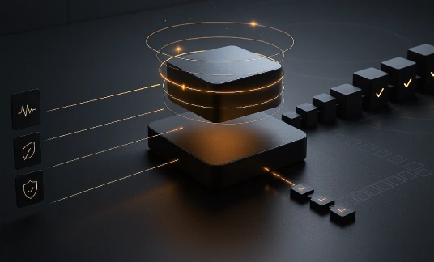

Aligned to the standards institutions require.
Operational validation, functional separation and interoperability standards: the conditions under which regulated institutions can adopt a verification layer.
Six conditions, all non negotiable.
Evaluation in real environments
Operational validation with complex assets under institutional control standards.
Functional separation
Clear separation between verification, custody, financial operation and banking supervision.
ISO 20022 compatibility
Alignment with global institutional banking interoperability standards.
Event based verification
Continuous asset monitoring with auditable events and asset states.
Flexible integration
REST and service oriented APIs for institutional systems.
Institutional evaluation
Formal evaluation processes for controlled environments.
Institutions & actors
Continuous verification of real-world assets, audited end to end.
Every asset is cross-validated against 100+ verification modes, from satellite and SAR radar to IoT sensors and public registries. Every digital twin is independently audited by the Big 4 (Deloitte, PwC, EY, KPMG) before delivery, reaches 99.9% replica accuracy across 9 twin layers, and carries a 6-stage data pedigree from source capture to DLT registration.
- 100+Verification modes
Optical, SAR radar, LiDAR, drones, IoT and registries, cross-validated per asset.
- 99.9%Replica accuracy
Fidelity of every digital twin to the physical asset it mirrors.
- 9Twin layers
Nine layers compose every digital twin, audited before delivery.
- 6Data pedigree stages
From source capture to DLT registration, stage by stage.
Audited by the Big 4 before delivery.
- Deloitte
- PwC
- EY
- KPMG
Every digital twin independently audited before delivery.
Plus specialized firms per vertical. Mandatory by design.
Six stages, from source to ledger.
- 01Source capture
- 02Source authentication
- 03Ingestion & cleaning
- 04Cross-validation
- 05Twin integration
- 06DLT registration
One continuous score, from 0 to 100.
The Aura Verification Engine ingests and cross-validates 100+ sources to produce a continuous Trust Score.
- Hold<60
- Watch60-74
- Standard75-84
- Premium85-89
- Enterprise90-100
- Optical satellite imagery
- SAR radar, all-weather 24/7
- LiDAR 3D precision mapping
- Drone fleets (fixed-wing, multirotor, BVLOS)
- Industrial IoT sensors
- Infrared & thermal cameras
- Environmental sensors
- Smart energy meters
- H2 quality analyzers
- BIM & building sensors
- Public registries & land records
- Regulatory bodies
- Commodity & metals exchanges
- Carbon & energy markets
- Reference financial data providers
- International standards & certification
- Regional field verification services
Generated from verification, layer by layer.
- 01SPATIAL
- 02MATERIAL
- 03OPERATIONS
- 04VERIFIED
Evidence that survives a supervisor.
Continuous records, functional separation and reconstructable history are what let a regulated entity adopt a verification layer without inheriting a new counterparty risk.

Start a formal institutional evaluation.
Evaluation runs on real assets, under your control standards, with structured reporting under NDA.